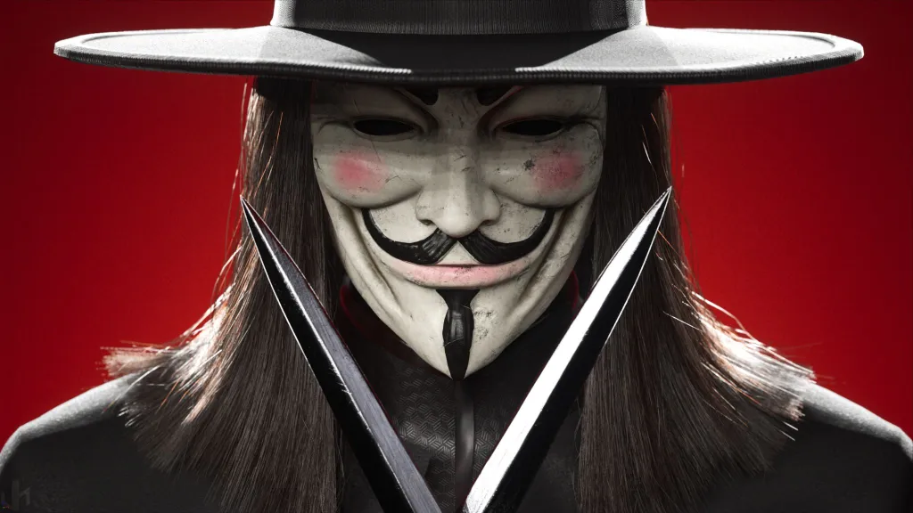
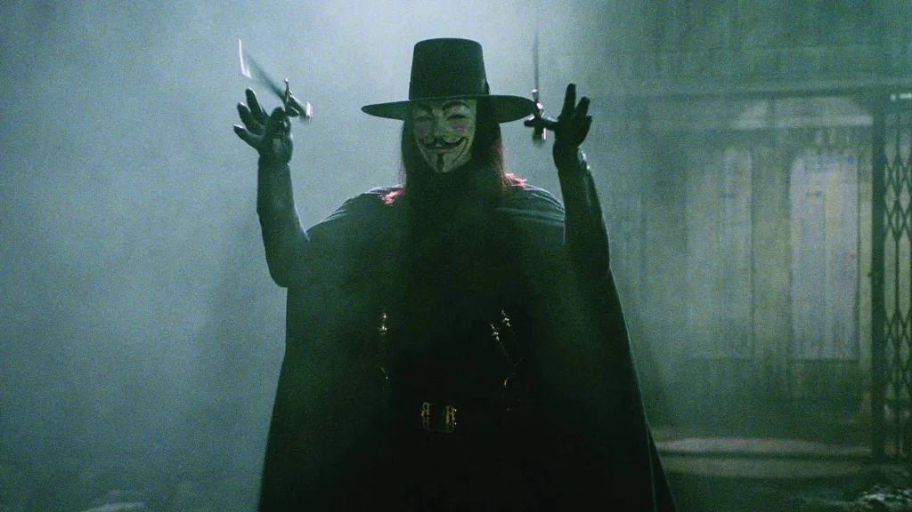

V de Vingança: quadrinho x filme — revolução ou espetáculo?

A máscara de Guy Fawkes, explosões simbólicas e um grito contra a opressão: V de Vingança marcou gerações tanto nos quadrinhos quanto no filme. Mas por trás da icônica imagem, existe um debate: a adaptação cinematográfica capturou a essência radical da obra original de Alan Moore ou a transformou em algo diferente?
Afinal, a revolução anarquista e crua das páginas de Moore se transformou em um espetáculo visual e emocional nas telas, suavizando algumas arestas. Essa adaptação foi uma traição à visão do autor ou uma forma necessária de levar a mensagem a um público maior, transformando a anarquia em um símbolo pop de resistência?
Hoje vamos comparar as duas versões de V de Vingança: o quadrinho denso e político versus o filme simbólico e acessível. Analisaremos as principais diferenças na abordagem dos personagens, da trama e da mensagem central para entender se temos uma revolução ou um espetáculo.
O Quadrinho: A Revolução Anarquista de Alan Moore
Lançada nos anos 80, a história foi escrita por Alan Moore e ilustrada por David Lloyd. O cenário é um Reino Unido distópico, dominado por um governo fascista e controlado por uma vigilância constante. É nesse mundo que surge o misterioso “V” — um anarquista mascarado que decide derrubar o sistema, uma explosão simbólica por vez.
Mas não se engane: o quadrinho é denso, político e radical. Moore não queria apenas entreter, ele queria provocar. O personagem “V” é ambíguo, beirando o terrorista. Ele não é exatamente um herói pelo menos não no sentido tradicional. Isso faz parte do charme da obra: ela não entrega respostas fáceis.
E sabe o que é mais interessante? Tudo é pensado pra colocar o leitor pra refletir. A linguagem é pesada, cheia de referências filosóficas e históricas. E a arte? Escura, quase opressiva, pra reforçar o clima tenso do regime que V quer derrubar.
Reflexões além do papel
Moore sempre disse que queria despertar o pensamento crítico. Pra ele, a anarquia não é caos, mas liberdade plena. A ideia era mostrar como o poder corrompe, e como o medo mantém as pessoas obedientes. Duro, né? Mas real.
Aliás, é impossível ler essa HQ e não pensar em situações do nosso dia a dia, especialmente quando a gente sente que o sistema não escuta quem realmente precisa ser ouvido.
O Filme: O Espetáculo Simbólico das Wachowskis

Em 2005, o cinema recebeu sua versão de “V de Vingança”, produzida pelas irmãs Wachowski (as mesmas de “Matrix”) e dirigida por James McTeigue. E o resultado? Um filme visualmente marcante, com frase forte atrás de frase forte, como a clássica “Ideias são à prova de balas.”
Mas o clima é outro: o filme é mais emocional, com foco nas relações humanas e em uma mensagem de esperança. O personagem V continua sendo um rebelde, claro, mas agora com um toque mais “heróico”. Evey, a protagonista vivida por Natalie Portman, ganha uma jornada de crescimento mais clara, mais “cinematográfica”.
Simbolismo em alta

Se no quadrinho a anarquia é a base, no filme a revolução vira quase um símbolo poético. A estética é impecável: a máscara de Guy Fawkes virou ícone (alô, Anonymous), as explosões são coreografadas com música e luzes. É quase um balé da revolta.
A trilha sonora épica, os discursos poderosos e o final que emociona garantem que o filme fique com você mesmo depois da sessão acabar. Mas será que essa suavidade não tira um pouco do peso da obra original?
+ Leia mais: Como Duna moldou o universo de Star Wars
Quadrinho vs. Filme: As Principais Diferenças
Pra facilitar, aqui vai um resumo das principais diferenças entre as duas versões de V de Vingança:
- Tema central: No quadrinho, o foco está na anarquia e no pensamento político. No filme, a ênfase vai para a libertação individual e o simbolismo da resistência.
- Personagem V: Mais sombrio, misterioso e até cruel no quadrinho. Já no filme, ele é mais carismático e menos questionável.
- Evey: Nos quadrinhos, ela tem um arco complexo e profundo. No filme, sua transformação é mais levinha e doce.
- Final: A HQ termina com um clima de dúvida — será que deu certo? Já o filme fecha com uma cena inspiradora e um ar de vitória coletiva.
Revolução Crua ou Esperança Cinematográfica?
Muita gente se emociona com o filme e se inspira com o discurso de liberdade. Outras preferem o soco na boca do estômago que o quadrinho entrega. E tá tudo bem. Os dois formatos possuem valor e cada um conversa com pessoas de formas diferentes.
Mas é interessante pensar: será que o filme precisou mesmo suavizar tanto a visão do Moore pra agradar o grande público? Ou foi uma escolha consciente pra adaptar as mensagens ao contexto atual?
Na minha opinião, o filme é uma bela porta de entrada pra conhecer a história. Mas o quadrinho entrega camadas que exigem mais do leitor e talvez, por isso mesmo, sejam mais impactantes.
O Legado de V: Da Revolução Anarquista ao Símbolo Pop
Mesmo anos depois, “V de Vingança” continua atual. A máscara de Guy Fawkes virou símbolo de protestos ao redor do mundo do movimento Anonymous às ruas do Brasil em 2013. E isso mostra como a ficção pode influenciar o real.
Seja nas páginas da HQ ou na telona do cinema, a história de V nos faz refletir sobre controle, medo, resistência e, claro… coragem. Afinal, como dizia o próprio V:
“O povo não deve temer seu Estado. O Estado deve temer seu povo.”
E aí, com qual versão você se identifica mais? Gosta mais da crítica crua do quadrinho ou da emoção épica do filme? Conta pra gente nos comentários!
Quer saber mais?
Se você curtiu esse tema e quer se aprofundar, dá uma olhada nestas sugestões:
- Quadrinho V de Vingança , de Alan Moore e David Lloyd - leia o original e tire suas próprias conclusões.
- Artigo: Sobre Constitucionalismo e democracia - várias publicações trazem análises interessantes.
Curtiu o conteúdo? Então compartilha com seus amigos fãs de HQs, cinema e revolução.
Leia Também
- Como seria a internet na Terra-Média
- Quantas calorias o Mario gasta em uma fase do jogo?
- Star Trek vs. Star Wars: Quem Tem a Melhor Utopia?
- Thanos: ecologista radical ou vilão com discurso ecológico?
- Darth Vader poderia ser julgado por crimes de guerra?
Sharing is caring!